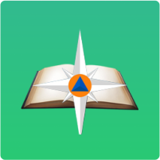

В рамках учебной практики был выполнен проект для Тетюшского государственного колледжа гражданской защиты. Основной задачей проекта было создание функционального и привлекательного сайта, отражающего основную информацию о колледже.
Была выполнена следующая работа:
- Разработка дизайна сайта, включая создание уникального и современного внешнего вида страниц
- Создание сайта на HTML, CSS и JavaScript
- Адаптация сайта под различные устройства, обеспечивая отличное отображение на компьютерах, планшетах и смартфонах
В ходе работы я придерживался всем требований заказчика и строго следовал предоставленному брифу. Целью было создать интуитивно понятный и простой в использовании сайт, который был бы полезным инструментом для колледжа и его студентов.
Созданный проект для Тетюшского государственного колледжа гражданской защиты является успешным примером моей работы в области веб-разработки. Я горжусь, что смог создать качественный продукт в рамках учебной практики.